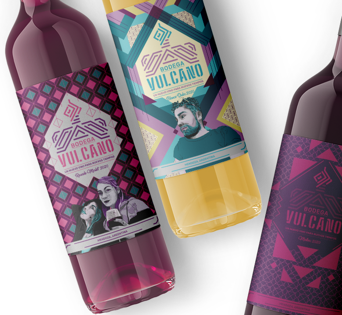

sabores que se funden
Nuestros vinos estan pensados para esas ocasiones especiales o no tanto, que pasamos con amigos. Es un vino joven para jovenes adultos.

un nuevo vino para nuevos tiempos
Conocé nuestro proyecto "Vulcano", mucho más que vinos
Creamos Vulcano pensando en mucho mas que otro vino, porque somos personas ya no tan jovenes que disfrutan un trago con amigos y, obvio, cada tanto solos en casa. Por eso creamos espacios de degustacion y hasta envios propios. Las personas sabias dicen que una copita de vino tinto al día es buena para la memoria… Pero a quién vamos a engañar, ¡nosotrxs nos tomamos más de una!